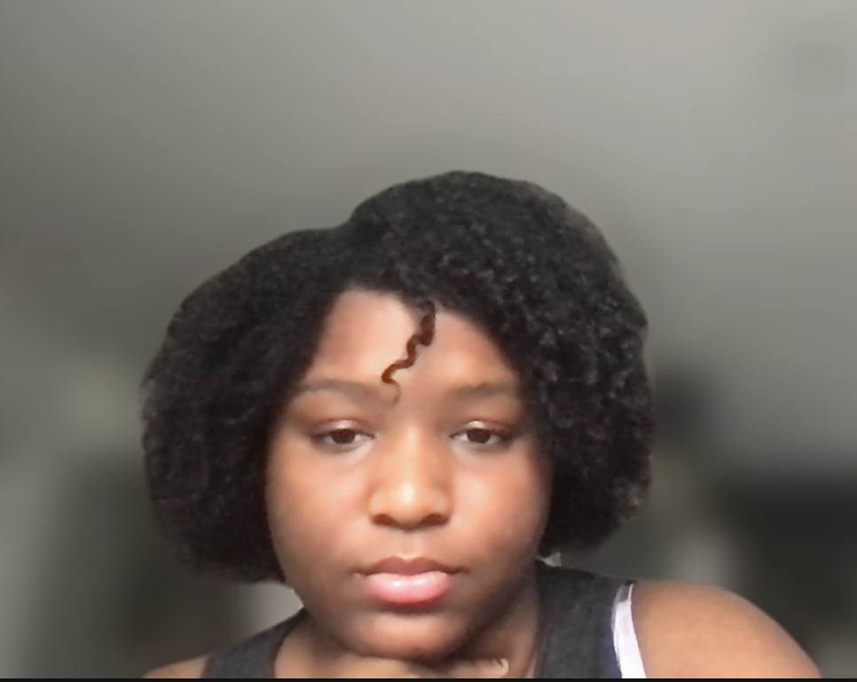
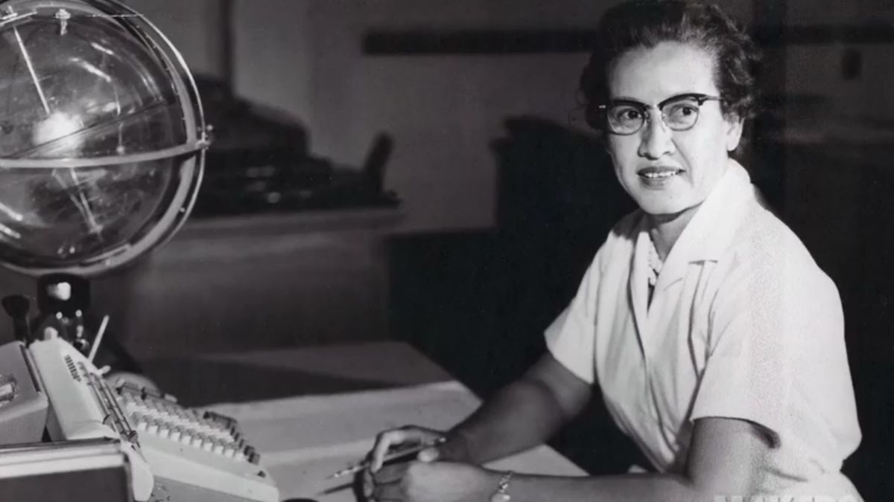
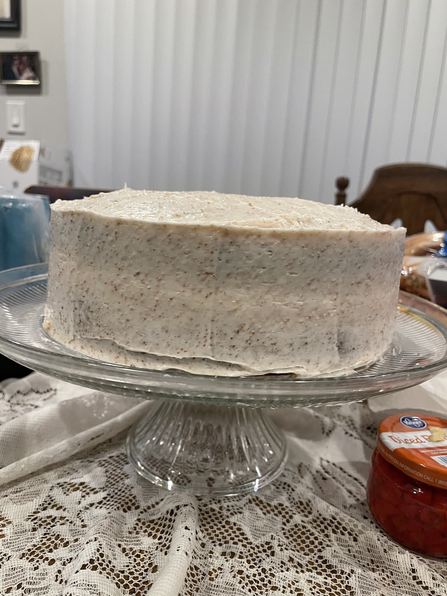
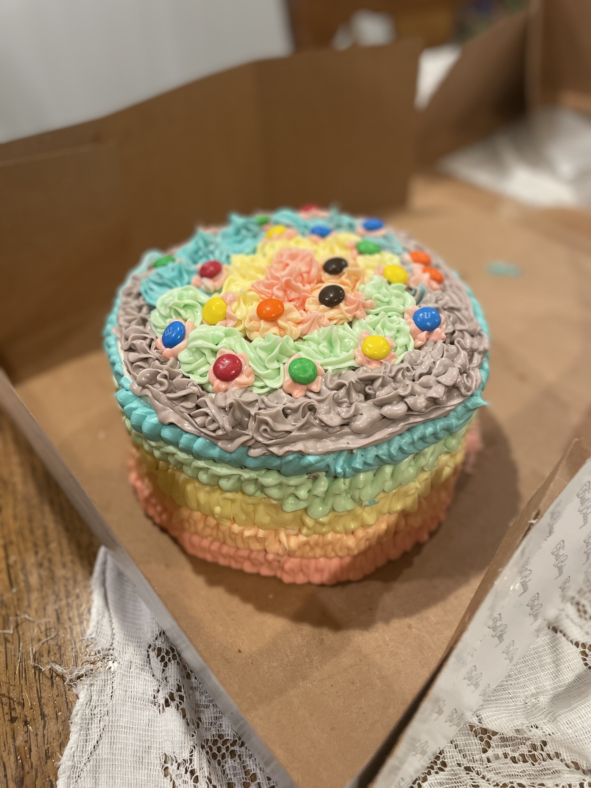
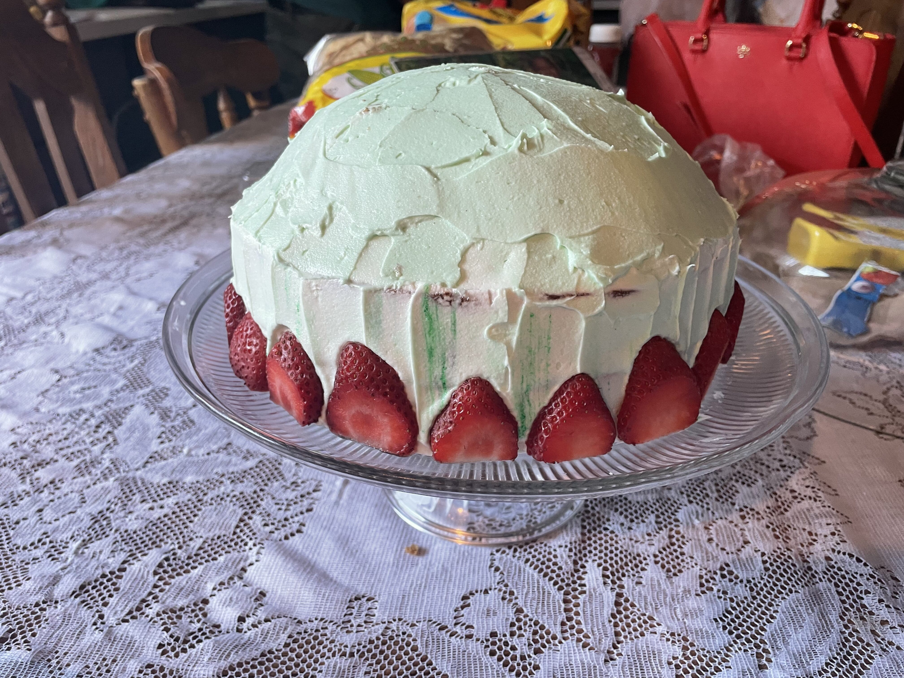

My Introduction To You!
That's me to the left! I'm a proud Afro-Latina and big sister! I like to keep myself busy with STEM studies. It can range from Calculus, programming, or even chemistry in the kitchen. I still like to express myself in the arts. Currently, I'm relearning how to paint in gouche, drawing, fashion, and especially my hair! I love to express myself with my hair, you'll see!
Role Models
Women in Stem! It's so hard to get into any men dominated field, especially the technology industry. Katherine Johnson faced even more barriers in 1969! I refer to one of her famous quotes...
Now For Some Fun Facts!
- I love to Game!
- Baker for family, friends, and me
- Starting to animate on zoetropes!
- Love Disney since birth!
A Video Of My Favorite Game
Hades by Super Giant Games has turned into my favorite game of all time. It's a roguelike, meaning every time I play it'll be a new experience. Above you can see me play against one of the bosses.
Love To Bake!
  I have been baking all my life, and love it as you can see! Above are some of my creations
Disney Kid!
My mom always takes my family to Disneyland every year, so I've quickly grown to love it. I adore the Kingdom Hearts franchise!
Resume
| Education | Alexander Hamilton Senior High Humanities Magnet 2019-2023 Planned to study Computer Science in 4-year University |
|---|---|
| Homne Responsibility | Caregiver Helper since 2016, has taught leadership and collaborative work. Especially to appreciate time with people in my life. |
| Knowledge In Various Coding Langs. | Java, Pyhton 2, HTML 5 |
| Imaginative Engineer | Studying Physics to get a base on creating designs. Won compeition for creating prototype advocating for sustainability. |
| Empathetic Leader | Used to being a team captain or leader in small group. I make sure my team has a high satisfaction level and morale stays high. |